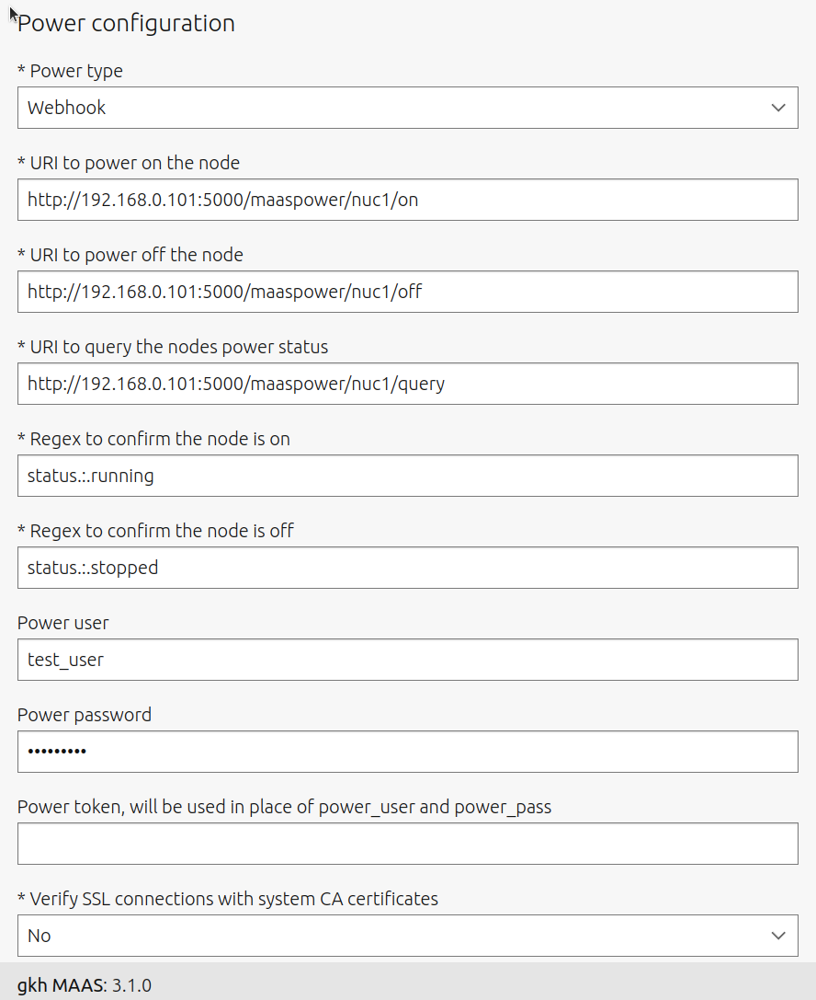

How to use MaasPower#
To use maaspower you will first need to create a configuration file that describes the set of devices that you want to control and the webhooks that will be supplied to control them.
Next launch the webhook server on an appropriate machine.
Finally configure MAAS to talk to the webhook server on behalf of each of the bare metal machines that you are controlling.
Configuration#
An example YAML config file is shown below. This configures the following devices, which include all device types currently supported
A SmartThings controlled device, nuc1.
2 Command line controlled devices pi1, p2.
A Web GUI controlled device, pi5.
# yaml-language-server: $schema=maaspower.schema.json # NOTE: above relative path to a schema file from 'maaspower schema <filename>' name: my maas power control webhooks ip_address: 0.0.0.0 port: 5000 username: test_user password: test_pass devices: # This requires a smartThing compatible switching device and related # token, device ID. - type: SmartThingDevice name: nuc1 # token and id redacted api_token: YOUR_SMART_THINGS_API_TOKEN device_id: YOUR_SMART_THING_DEVICE_ID off: main switch off on: main switch on query: switch # These require that the server is running on a machine with USB # connection to a power control USB hub and the uhubctl utility installed. - type: CommandLine name: pi1 on: uhubctl -a 1 -p 1 off: uhubctl -a 0 -p 1 query: uhubctl -p 1 query_on_regex: .*power$ query_off_regex: .*off$ - type: CommandLine name: pi2 on: uhubctl -a 1 -p 2 off: uhubctl -a 0 -p 2 query: uhubctl -p 2 query_on_regex: .*power$ query_off_regex: .*off$ - type: WebGui name: GS308EP connect_url: http://GS308EP_IP_ADDRESS timeout: 10 driver: /home/giles/work/maaspower/utils/chromedriver login: | sendcr/cls/pwd-field-text/PASSWORD_GOES_HERE click/link/POE logout: | click/cls/src-views-header-nav-icon-button click/cls/icon-logout click/id/modal_footer_button_primary - type: WebDevice name: GS308EP-pi5 on: | click/n/isShowPot3 click/n/editPot3 click/cls/poePortPwrTxt click/link/Enable click/n/submitPotedit off: | click/n/isShowPot3 click/n/editPot3 click/cls/poePortPwrTxt click/link/Disable click/n/submitPotedit query: | delay/5 get/cls/portPwr[2] query_on_regex: Enable query_off_regex: Disable
Launch the Web Hook server#
Once you have the correct configuration you can launch the server from the command line. This assumes you have activated a virtual environment with maaspower installed, see Installation.
It is important to select an appropriate machine to run the Web Hook Server. First if there are any usb controlled hubs or other devices that are not network attached then the Web Server must run on the machine with these devices connected. A good option is to use a rack server and have all the necessary hardware connected to it.
Use this command:
maaspower run <path to configuration file>
This command will validate your config file against the schema and report any issues. Schema validation failure will abort the web server.
If you wish to get assistance with the format of the config file you can generate a schema file and use a schema aware editor which will give you hints and autocompletion. See YAML schema for details.
Configure MAAS to connect to the webhook#
For each device configured in the maaspower config file. There needs to be an equivalent configuration of a MAAS controlled machine.
To do this select a Machine in the MAAS Web GUI and go to the configuration tab. Then select Power Configuration -> Edit.
An example configuration that matches the nuc1 device in the above config file is shown below. In this example the Webhook Server has been launched on a machine with IP 192.168.0.1.
{kind=link}